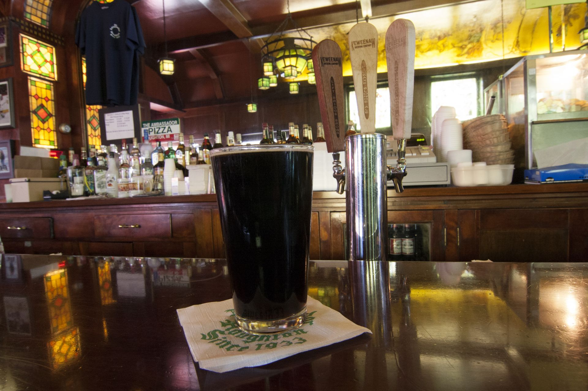
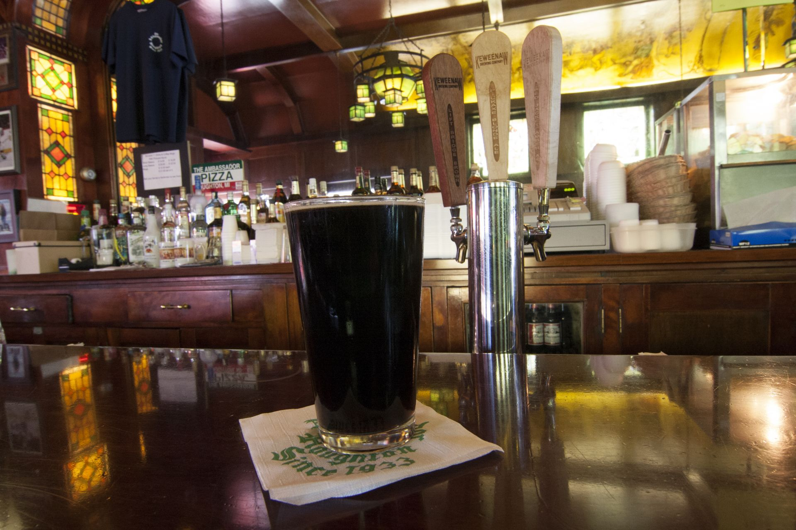
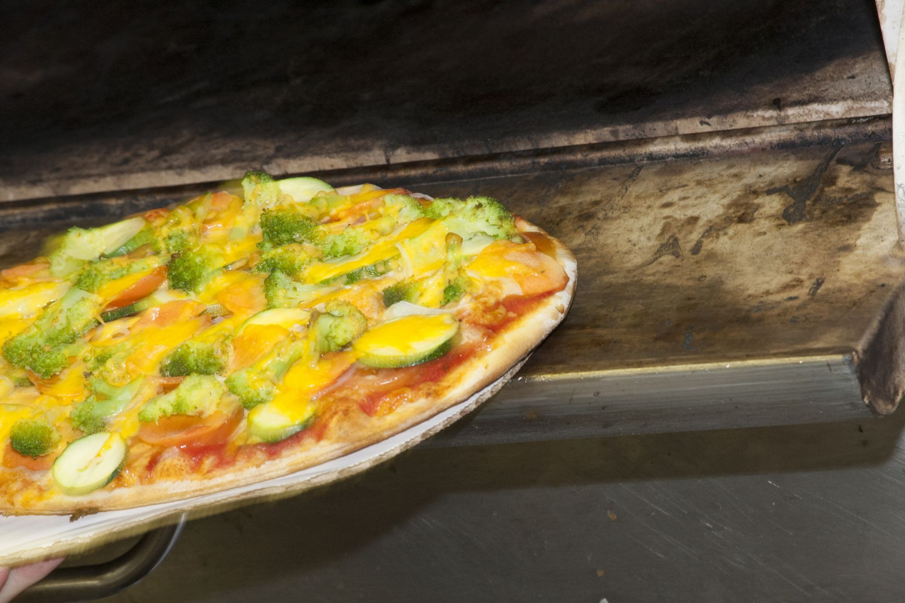
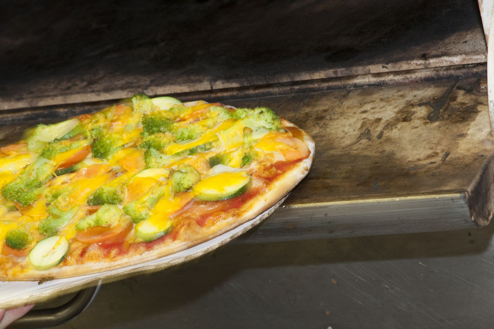
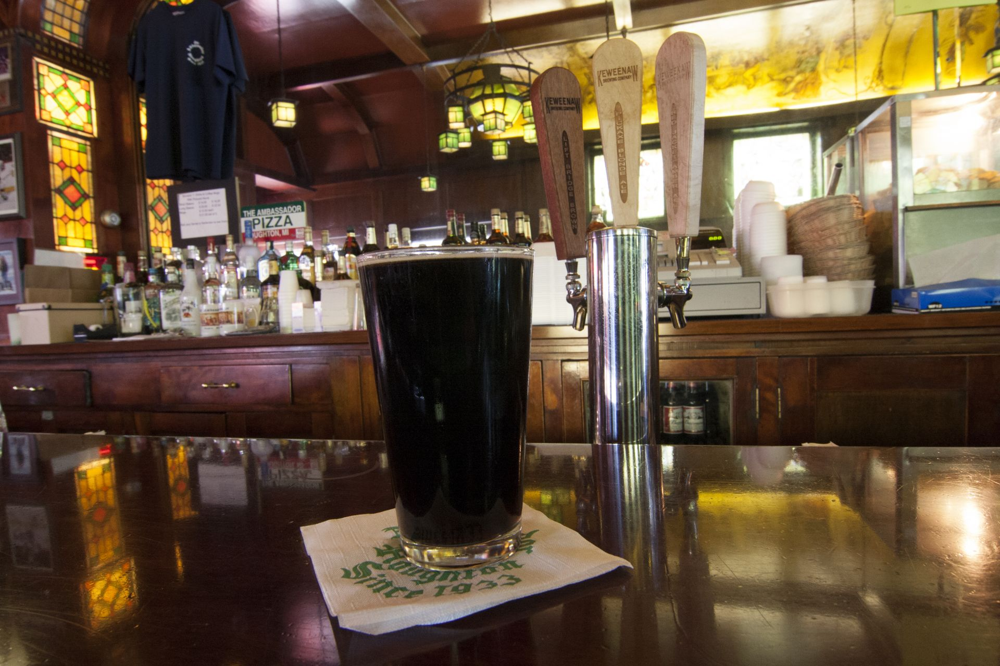
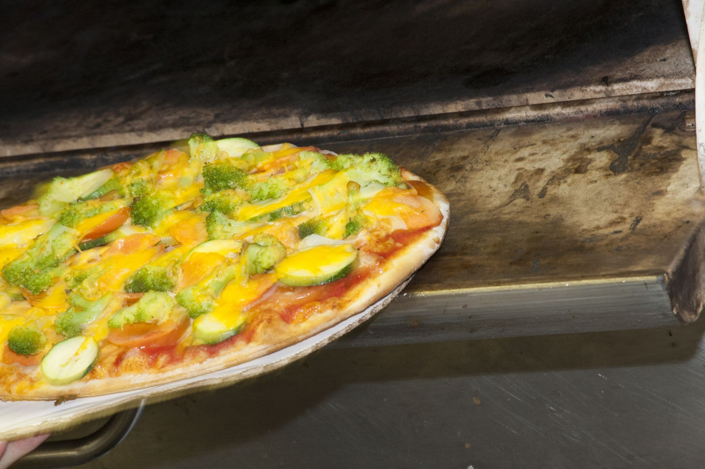

 

|
Note: All of our menu items are available for takeout
|
TOSTADA $12/$14/$17 |
|---|
| Award-winning tostada beef layered over house-made pizza sauce and baked with Wisconsin white colby cheese. Topped with fresh shredded lettuce, tomatoes, Wisconsin cheddar cheese and tostada hot sauce. |
B.L.T. PIZZA$12/$15/$18 |
| A generous amount of smoked bacon layered over salad dressing, baked with Wisconsin white colby cheese. Topped with fresh shredded lettuce and tomatoes. |
VEGETARIAN PIZZA$12/$14/$17 |
| Tomatoes, zucchini, carrots, onions, broccoli, Wisconsin cheddar & white colby cheeses, and garlic olive oil, layered over house-made pizza sauce. |
GREEK$12/$15/$19 |
| Fresh spinach, tomatoes, black & green olives, feta cheese, oregano and garlic basil olive oil layered over Wisconsin white colby cheese. |
GARLIC CHICKEN PIZZA$14/$16/$19 |
| Tender chopped chicken breast, broccoli, basil, oregano and garlic olive oil, layered over Wisconsin white colby cheese. |
LOBSTER PIZZA$15/$19/$23 |
| A generous amount of Lobster Sensation, tomatoes, parsley and garlic olive oil layered over Wisconsin white colby cheese. Served with lemon wedges. |
PESTO PIZZA$11/$14/$17 |
| A generous layer of basil pesto topped with Wisconsin colby cheese, tomatoes, and feta cheese. |
QUESADILLA PIZZA$14/$16/$19 |
| Tender chopped chicken breast, green peppers, onions, bacon and Wisconsin cheddar cheese layered over Wisconsin white colby cheese and our house-made spicy aioli sauce. |
BBQ CHICKEN PIZZA$14/$16/$19 |
| Tender chopped chicken breast, banana peppers, sliced red onion, and Wisconsin white colby cheese layered over tangy barbeque sauce, topped with Wisconsin cheddar cheese. |
BUILD YOUR OWN AMBASSADOR PIZZA$1-$5 per Topping |
Add your favorite ingredients listed below to our basic cheese pizza: |
| Sausage
Pepperoni Ham Smoked Bacon Anchovies Shrimp Marinated Chicken Spinach Fresh Mushrooms Broccoli Zucchini Marinated Cherry Tomatoes Pineapple Diced Jalapenos Black Olives Green Olives Diced Tomatoes Green Pepper Onions Chopped Garlic Feta Cheese Banana Peppers Garlic Oil |
| Gluten free crust available for medium-size pizzas. |
|
Note: All of our menu items are available for takeout
|
SPAGHETTISm. $6/Lg. $8 |
|---|
| Slow-cooked house-made Italian meat sauce served over spaghetti, topped with grated Parmesan and served with fresh baked garlic toast. Also available with Italian meatballs. (Meatless sauce also available upon request .) |
LASAGNA$11 |
| Herbed ricotta cheese & house-made Italian meat sauce, layered with Wisconsin cheddar & Wisconsin white colby cheese. Served with fresh baked garlic toast. (Allow 15 minutes) |
RAVIOLISm. (3) $4/Lg. (5) $8 |
| Italian beef, caramelized onions & herb ricotta cheese stuffed ravioli, topped with our house-made Italian meat sauce and grated Parmesan. Served with fresh baked garlic toast. |
PESTO PASTA$8 |
| Spaghetti tossed with pesto sauce, fresh spinach and marinated cherry tomatoes. Served with fresh baked garlic toast. |
SPECIALTY PASTA$6 |
| Spaghetti mixed with a fresh olive oil pan sauce of garlic, basil, marinated cherry tomatoes and Parmesan cheese. Served with fresh baked garlic toast. |
| Additions to our Specialty Pasta or Pesto Pasta: |
Sliced chicken breast$2Alaskan salmon $4Lobster sensation $5 |
|
Note: All of our menu items are available for takeout
|
HOUSE SALAD$4 |
|---|
| Iceberg lettuce, tomatoes, onions, Wisconsin cheddar cheese and croutons. |
SIDE CAESAR SALAD$5 |
| Romaine lettuce, croutons, onions and tomatoes, topped with shredded Parmesan cheese & Caesar dressing. |
CAESAR SALAD$7 |
| Romaine lettuce, croutons, onions and tomatoes, topped with shredded Parmesan cheese & Caesar dressing. Served with fresh baked garlic toast. (Also available topped with garlic herb grilled chicken breast or Alaskan salmon) |
CHEF SALAD$8 |
| Iceberg lettuce, lean premium deli ham, tender sliced turkey, tomatoes, onions, hard-boiled egg & Wisconsin cheddar cheese. Served with fresh baked garlic toast & choice of dressing. |
GARDEN SALAD (Vegetarian)$7 |
| Iceberg lettuce, tomatoes, onions, green pepper, black olives, hard-boiled egg and Wisconsin cheddar cheese. Served with fresh baked garlic toast and choice of dressing. |
TACO SALAD$8 |
| Iceberg Lettuce topped with our specialty house-made tostada beef, Wisconsin cheddar cheese, tomatoes, black olives and corn chips. Served with tostada hot sauce, sour cream and salsa. |
ITALIAN BEEF VINAIGRETTE$8 |
| Iceberg lettuce with thinly shaved tender roast beef, Italian green beans, onions, tomatoes and black olives. Served with fresh baked garlic toast & Italian dressing. |
ITALIAN TUNA SALAD$8 |
| Iceberg lettuce with chunks or light tuna, onions, tomatoes, green beans, yellow wax beans & kidney beans. Served with fresh baked garlic toast & Italian dressing. |
GREEK SALAD$8 |
| Iceberg lettuce with onions, tomatoes, black olives, green peppers, marinated cucumbers and crumbled feta cheese. Served with fresh baked garlic toast & Italian dressing. |
| AVAILABLE DRESSINGS (served on the side) |
|
House-made Ranch
French Italian Caesar Bleu Cheese Thousand Island Balsamic Vinegar Red Wine Vinegar & Oil FF Raspberry Vinaigrette |
| Note: Salads can be made with fresh baby spinach or Romaine lettuce for an additional charge. |
|
Note: All of our menu items are available for takeout
|
AMBASSADOR SUBMARINE SANDWICHES |
|---|
TRADITIONAL8 in. $6 / 16 in. $12 / 24 in. $18 |
| Warm crusty Italian bread with Cotto salami and bologna, sliced Wisconsin white colby cheese, tomatoes, onions, lettuce and salad dressing. (8”, 16” or 24”) |
THREE CHEESE8 in. $6 / 16 in. $12 / 24 in. $18 |
| Warm crusty Italian bread with sliced Wisconsin cheddar, white colby and Swiss, tomatoes, onions, lettuce and salad dressing. (8”, 16” or 24”) |
SPECIALTY SANDWICHES |
| Served with kettle cooked chips and a pickle. Sandwiches are served on our warm crusty Italian bread. (Split-top wheat available upon request.) |
REUBEN$7 |
| Hot corned beef, creamy Swiss cheese, zesty dressing with spiced sauerkraut. |
YODELER$7 |
| Hot corned beef, shredded lettuce and sliced tomatoes topped with zesty dressing. |
ROAST BEEF$7 |
| Tender roast beef served with a side of au jus. |
YORKSHIRE BEEF$7 |
| Tender roast beef with fresh sliced Wisconsin cheddar cheese and a side of au jus. |
RACHEL$7 |
| Tender roast beef, creamy swiss cheese and spiced sauerkraut. |
HAM & SWISS$7 |
| Sliced premium lean deli ham, creamy swiss cheese, shredded lettuce and salad dressing. |
CUDIGHI$7 |
| A classic Upper Peninsula version of this traditional Italian sausage. House-made for over 50 years! Served with house-made pizza sauce & Wisconsin white colby, or with mustard & onions. |
ITALIAN MEATBALL$7 |
| Six large savory meatballs stewed in an Italian tomato sauce, topped with Wisconsin white colby cheese. |
TURKEY$7 |
| Tender sliced whole turkey breast, shredded lettuce and salad dressing. |
TURKEY DELUXE$7 |
| Tender sliced whole turkey breast, shredded lettuce, tomatoes and Thousand Island dressing. |
MEATLOAF$6 |
| House-made with lean ground beef. Served hot or cold with lettuce and salad dressing. |
AMBO MAC$7 |
| Our famous house-made meatloaf warmed in au jus and served with lettuce, tomatoes, onions, Wisconsin cheddar cheese and Thousand Island dressing. |
TUNA$7 |
| Fresh made salad of celery, onion & tuna with shredded lettuce and salad dressing. |
TUNA SUPREME$7 |
| Fresh made salad of celery, onion & tuna with shredded lettuce, tomatoes, sliced Wisconsin cheddar cheese and Thousand Island dressing. |
AMBASSADOR CLUB$7 |
| Tender sliced turkey breast, lean ham, Wisconsin cheddar cheese, tomatoes, lettuce and salad dressing. |
PESTO CHICKEN SANDWICH$8 |
| Tender sliced chicken breast and tomatoes baked in fresh garlic olive oil, topped with pesto and romaine lettuce. |
CHICKEN SANDWICH$8 |
| Tender sliced chicken breast baked in garlic basil olive oil, topped with lettuce, tomatoes and salad dressing. |
MEDITERRANEAN CHICKEN$8 |
| Tender sliced chicken breast with fresh spinach, tomatoes and feta cheese. (Substitute Alaskan salmon for an additional charge of $2) |
|
Note: All of our menu items are available for takeout
|
NACHOS$4 |
|---|
| Corn tortilla chips served with hot nacho cheese (Add house-made salsa, sour cream, jalapeños or an extra basket of chips for additional charge) |
BAKED POTATO SHELLS$6 |
| Filled with sautéed Italian onion sausage, Wisconsin cheddar and Parmesan cheese. Served with sour cream. (Allow 15 minutes) |
SAVORY ITALIAN MEATBALLSSm. (6) $4 / Lg. (10) $7 |
| Topped with shredded Parmesan cheese and served with house-made pizza sauce. |
FRESH BAKED GARLIC TOAST BASKET$3 |
| (Add house-made ranch dressing, spaghetti sauce or pizza sauce for an additional charge) |
TOSTADA SPECIALTIES |
BEEF OR BEAN TACOHard Corn Tortilla $2 / Soft Flour Tortilla $3 |
| Hard corn or soft flour tortilla with house-made tostada beef, shredded lettuce, Wisconsin cheddar cheese, diced tomatoes and tostada hot sauce. |
BURRITO$4 |
| Soft flour tortilla filled with house-made refried beans, tostada beef, Wisconsin cheddar cheese, black olives and tostada hot sauce. (Add sour cream or nacho cheese for an additional charge) |
NACHO GRANDE$8 |
| Our delicious house-made tostado beef served over corn tortilla chips, topped with shredded cheddar cheese, lettuce, tomato and black olives. Served with a side of hot nacho cheese. (Also available with salsa or refried beans) |


Monday - Thursday 11am - 10 pm
Friday & Saturday 11am - 11pm
Sunday 4 pm - 10 pm